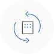

사업전환지원사업


 외부 경영환경 변화로 어려움을 겪고 있는 중소기업의 사업전환을 촉진하여 경쟁력을 강화하는 사업입니다.
사업목적
경영여건 변화로 인해 현재 영위 업종에서 새로운 업종으로의 전환을 모색하는 중소기업을 대상으로 자금, 컨설팅, R&D 등을 연계 지원하여 경쟁력 강화와 산업구조의 고도화 촉진
사업전환의 정의 및 유형
- 경제환경의 변화로 어려움을 겪는 기업이 경쟁력 강화를 위해 새로운 업종의 사업에 진출하는 것
* 별도 기업을 설립하여 새로운 사업을 개시하는 창업과는 구별됨
<사업전환의 유형 및 성공기준>
- 업종전환
-
- 내용 : 현재 영위업종 사업 폐기 → 새로운 업종으로 전환
- 성공 : 사업전환계획 이행기간 중 신규업종의 매출액이 전체 매출액의 30% 이상을 차지하거나 신규업종의 종업원수가 전체 종업원의 30%이상을 차지
- 업종추가
-
- 내용 : 현재 영위업종 규모(매출 또는 상시근로자) 축소 또는 유지 → 새로운 업종 추가
- 성공 : 사업전환계획 이행기간 중 신규업종의 매출액이 전체 매출액의 30% 이상을 차지하거나 신규업종의 종업원수가 전체 종업원의 30%이상을 차지
* 제조업 ↔ 서비스업 업태전환도 사업전환에 포함
* 새로운 업종의 기준 : 표준산업분류상의 제조업은 세분류(4단위), 서비스업 등 제조업 이외의 경우, 소분류(3단위)가 다른 업종
- 제조업 예시) 기타 전기변환장치 제조업(28119) → 전기회로 접속장치 제조업(28122)
- 서비스업 예시) 생활용 가구 도매업(46431) → 사무용 가구 및 기기 도매업(46591)
* 사업전환 실시기간 : 승인일로부터 3년 이내 (1회에 한해 1년 이내 연장 가능)
* 사업전환비중 : 전환·추가된 업종의 매출액 또는 상시근로자수가 전체에서 차지하는 비중
사업전환계획 승인 신청대상
- 승인신청일 현재 3년 이상 계속하여 사업을 영위하며, 상시근로자수가 5인 이상인 중소기업으로 다음 업종 조건을 만족하는 기업
- 현 영위업종
-
- 모든업종 (단,『중소기업창업 지원법 시행령』에 따른 창업에서 제외되는 업종은 제외)
- 전환 진출업종
-
- 제조업 또는 서비스업* (단, 융자계획 공고상(별표1) 업종 제외)
* 서비스업은 제 10차 한국표준산업 분류상의 “농업, 임업 및 어업, 광업, 제조업, 전기·가스·증기 및 수도사업, 건설업”을 제외한 업종
승인 제외대상
- 사업전환계획 승인의 탈락일 또는 취소일로부터 6개월이 경과하지 아니한 업체
- 휴·폐업 중인 업체
- 승인신청일 현재 사업전환계획 업종의 최초 매출발생일로부터 1년 이상이 경과한 자. 다만, 승인신청일 현재 시제품 또는 내부사용제품으로 개발하여 전체 매출액의 5% 이내인 경우는 매출로 미간주
사업전환융자
신청대상 : 사업전환계획 승인기업, 사업재편계획 승인기업(기업활력제고법 의거)
융자범위
- 시설자금
- 생산설비 및 시험검사장비 도입 등에 소요되는 자금
- 정보화 촉진 및 서비스 제공 등에 소요되는 자금
- 공정설치 및 안정성평가 등에 소요되는 자금
- 유통 및 물류시설 등에 소요되는 자금
- 사업장 건축자금, 토지구입비, 임차보증금
* 토지구입비는 건축허가가 확정된 사업용 부지 및 산업단지 등 계획입지의 입주계약자 중, 6개월 이내 건축착공이 가능한 경우에 한함
- 사업장 확보(매입, 경·공매)자금
* 사업장 확보자금은 사업영위 필요에 따라 기업당 3년 이내 1회로 한정 지원 - 운전자금
- 경영애로 해소 및 사업전환에 소요되는 비용, 제품생산 및 기업경영 소요 비용
융자조건
- 대출금리
- 대출금리(기준금리) : 정책자금 기준금리(변동)
- 대출기간
- 시설자금 : 10년 이내(거치기간 5년 이내 포함)
* 시설자금 신용대출은 거치기간 4년 이내
- 운전자금 : 6년 이내(거치기간 3년 이내 포함) - 대출한도
- 최대 100억원 이내 (운전자금은 연간 5억원 이내)
* 단, 수출향상기업(최근 1년간 직수출실적 50만불 이상이며 20% 이상 증가), 최근 1년간 10인 이상 고용창출 기업, 최근 1년간
10억원 이상 시설투자기업(금회 포함)의 운전자금은 연간 10억원 이내 - 융자방식
- 중진공 직접대출 또는 금융회사 대리대출
사업 진행 절차
- 융자는 정책자금 융자절차를 따름

- STEP 01
- 사업전환 계 승인 및 지원신청
- STEP 02
- 현장실사

- STEP 03
- 사업전환 계획승인 및 지원결정

- STEP 04
- 지원 및 사후관리
융자상담처
더욱 자세한 상담은 전국에 위치한 중진공 각 지역본(지)부로 문의하여 주시기 바랍니다.